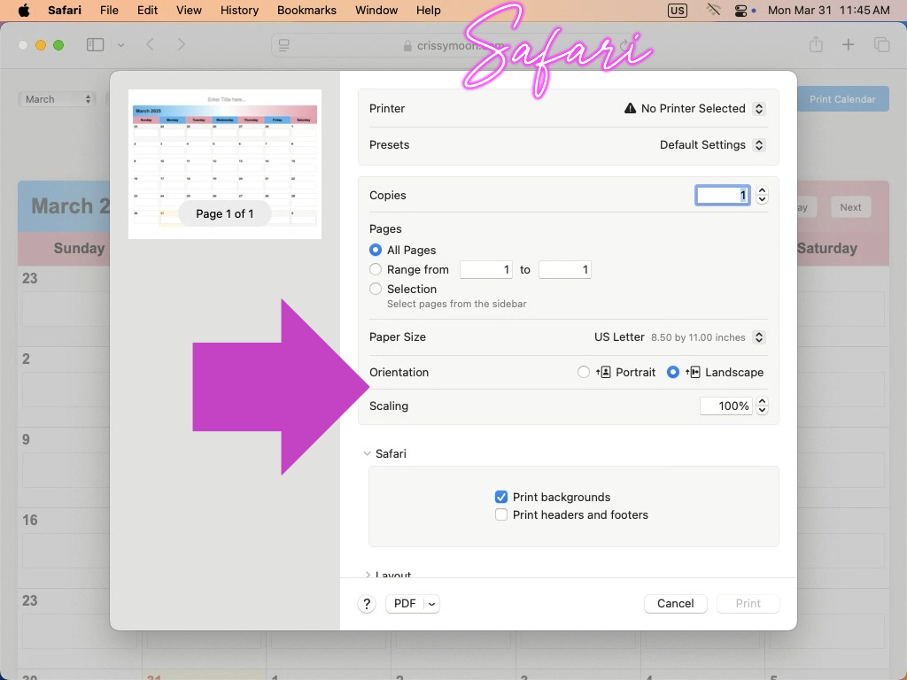

Greetings,
In this quick and friendly tutorial, I’m excited to explain how to use your browser's scale feature in the print settings to ensure your printout fits perfectly on one page.
To access the print option, right-click, hit Ctrl+P, or go to the menu button in the top right corner—on most browsers.
If you're using the calendar tool, just click the print button, and the print settings will open for you right away! When you print, the options at the top of the calendar will disappear. This calendar is super simple to use: just click in the box for the day you wish to add an event, start typing, and it's there!
Once you're in the print settings, remember to click on "More settings" to see all your options available. Some browsers may just scroll down to the feature.
You will find where it says scalable or scale, go to custom, or the portion where it has a number value, and adjust it lower or higher to fit your wishes.
For the best appearance, use the “Landscape” layout and “Letter” for the paper size. Make sure to click background graphics if you wish to use color. Uncheck headers and footers if wanted as well.
Just a little tip: This calendar tool works best with Google Chrome.
One of the cool features is that your calendar will automatically save to your local storage, so you don’t have to worry about losing your progress on an accidental close. I’ve found that on Chrome, it stays saved for quite a while. Remember that clearing your history, cache, disk cleanup, or cookies might erase the content. This tool is perfect for creating a quick, one-page printable calendar. Remember, this is just designed for a quick, one-time calendar creation. If you want to incorporate this using a database of events, add users with the ability to log in, or do anything else you can imagine, just let me know. We can review what you are trying to implement, discuss the security needs, and find the best solution.
This calendar is responsive, so it will work on many different devices, including tablets and some larger phones. I recommend flipping smaller devices sideways for the best visual presentation and simplicity of use. It may seem like the calendar is missing days on a phone without flipping sideways. Note: This is primarily designed for tablets, laptops, and desktop computers. But don't worry—I'm working on an exciting way to make all this data accessible and user-friendly on smaller phones, too! So, stay tuned for some awesome updates coming your way. If you run into any issues or have suggestions for new features, I’d love to hear from you! Feel free to send me an email anytime.
Remember to kick off your calendar with a fun and catchy title at the top! Just click where it says, “Enter Title Here…” and start typing.
Take a look at the screenshots below! It'll help you identify which settings you might want to change. If necessary, click the arrows on the left and right of the image slider and toggle to full screen with the button at the top right.
**04-06-2025** I made some updates to enhance the responsiveness. Now, in the bottom right corner of each day, you can use the small triangle to resize the days. Additionally, the grab symbol (small triangle in the bottom right corner of each day) will disappear when you click the print button. I also improved the notes section at the bottom, allowing it to auto-size. The title and notes are not auto-saved since this is a public version, yet all the day content will remain the same, and auto-save. However, please let me know if you need a custom version for your desktop or webpage.
Click here to open the calendar tool!
